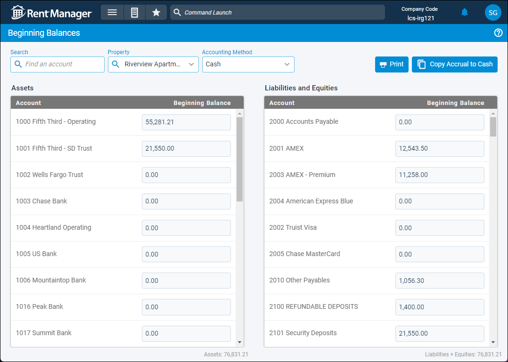
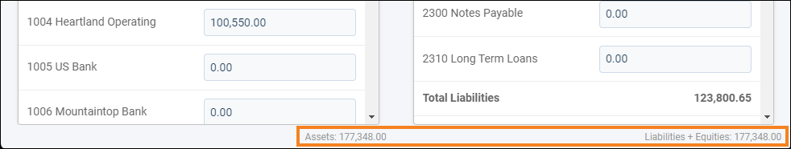

Source: https://rmxhelp.rentmanager.com/Topics/Express/Other/Beginning-Balances.htm
Beginning Balances
Beginning balances allow you to enter the complete financial position of your business prior to when you started using Rent Manager. That way, the previous financial standing of your business is included in Rent Manager reports and bank balances without having to enter old financial data into the program. To save time and add the beginning balances for multiple properties and accounting bases at once, you can instead import beginning balances using the Import Journals tool.
Related Preferences
Beginning balances in Rent Manager are entered as transactions posted on the G/L Start Date defined in system preferences. For more information, refer to General Ledger Settings (System Preferences).
Rent Manager uses double-entry bookkeeping to track all accounting records. Therefore, the beginning balances for each property must follow this formula: Assets = Liabilities + Equities.
Beginning balances must be entered for each property that has financial history that occurred before being added to Rent Manager. Additionally, these balances must be added for the accounting method used by that property: Cash or Accrual. It is recommended you enter the balances for both accounting methods.
Related Privileges
| Group | Privilege | Column |
|---|---|---|
| Setup | Beginning balances | View |
For more information, refer to Control User Access.
To manage your beginning balances, go to  arrow_forward Accounting arrow_forward Accounting Setup arrow_forward General arrow_forward Beginning Balances.
arrow_forward Accounting arrow_forward Accounting Setup arrow_forward General arrow_forward Beginning Balances.

More Information
Beginning balances establish the starting totals in each of your GL accounts, but do not included the individual transactions that make up the sum. For any accounts that you wish to view detailed transaction information for in reports, you should instead enter the transaction information and/or journal entries. You must ensure that the total of your beginning balances, transactions, and journal entries reflects your financial data correctly. For more information, refer to Import Charges and Import Payments.
Enter Beginning Balances
Related Privileges
| Group | Privilege | Column |
|---|---|---|
| Setup | Beginning balances | View, Edit |
For more information, refer to Control User Access.
Additionally, you must have access to each bank and credit card account that needs a beginning balance entered. Your access to banks and credit cards can be managed on the user's details page. For more information, refer to Limit Access to a Bank or Credit Card.
To set up the beginning balances, do the following:
-
In the Property field, select the property for which to enter beginning balances.
More Information
This field populates only with the properties to which you have access. Your access to properties can be managed from your user account or on the property's details page. For more information, refer to Limit Access to a Property.
-
In the Accounting Method field, select Cash or Accrual. Each property can have a different set of beginning balances for cash-basis accounting and accrual-basis accounting.
-
In the Assets section, all asset-type general ledger (GL) accounts in your chart of accounts display in the Account column. In the Beginning Balance column, enter a dollar amount in the associated field for every account that has a beginning balance.
-
In the Liabilities and Equities section, all liability-type GL accounts display in the Account column, followed by all equity-type GL accounts. In the Beginning Balance column, enter a dollar amount in the associated field for every account that has a beginning balance.
-
Once all beginning balances are entered, verify that your Assets = Liabilities + Equities. You can check these balances at the bottom of the page, as shown below.

-
Click Save.
The beginning balances for the property are updated for the selected accounting basis. -
Repeat these steps for each property that needs beginning balances entered.
Copy Balances to Another Accounting Basis
Related Privileges
| Group | Privilege | Column |
|---|---|---|
| Setup | Beginning balances | View, Edit |
For more information, refer to Control User Access.
The beginning balances for each property must be entered into the accounting method used by that property: Cash or Accrual. It is considered best practice to enter the balances for both accounting methods in case the property's accounting basis ever changes or you need to run reports that might examine both accounting bases.
To save time, you can quickly copy your beginning balances from one accounting method to another, then make any edits as needed.
Copy Accrual to Cash
If you first entered the property's beginning balances with an Accounting Method of Accrual selected, do the following:
-
In the Accounting Method field, change the selection to Cash.
The cash-basis beginning balances for the property display. -
Click
 Copy Accrual to Cash.
Copy Accrual to Cash.
The balances on the page update to match the accrual-basis beginning balances. -
Make any updates as needed for the cash-basis balances.
-
Click Save.
The cash-basis beginning balances for the property are updated.
Copy Cash to Accrual
If you first entered the property's beginning balances with an Accounting Method of Cash selected, do the following:
-
In the Accounting Method field, change the selection to Accrual.
The accrual-basis beginning balances for the property display. -
Click
Copy Cash to Accrual.
The balances on the page update to match the cash-basis beginning balances. -
Make any updates as needed for the accrual-basis balances.
-
Click Save.
The accrual-basis beginning balances for the property are updated.